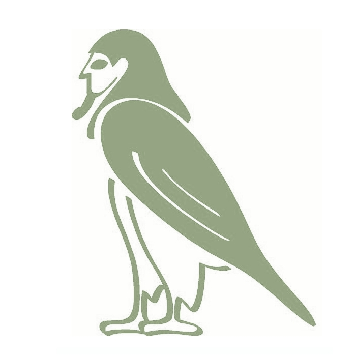

Al empezar el año y quedarme en paro, empecé a programar una idea que tenía pensada, en principio para pasar el tiempo y de paso aprender cosas modernas en la programación de aplicaciones web.
Ahora que la idea está online en www.foowill.com, os cuento un poco sobre ella. La idea es bastante simple, una aplicación que permita guardar tweets que serán enviados a twitter tras la muerte del usuario. La manera de comprobar esto es mediante un bot que periódicamente compruebe la linea temporal del usuario en busca de nuevas actualizaciones. En el caso de que pasado un tiempo (configurable) no se vean actualizaciones, se publicarán los post-tweets guardados. Incluyo una última comprobación de emergencia a una dirección de correo electrónico, antes de publicar nada, si el usuario lo requiere.
Salió hace poco una aplicación que sustancialmente hace lo mismo para facebook, podéis encontrar ese proyecto en http://ifidie.net/. Permite subir video y texto, pero requiere de la confianza en 3 amigos que verifiquen tu muerte. Incluso parece que hasta ya tienen modelo de negocio. Siguen saliendo aplicaciones parecidas como podéis leer aquí.
Bueno, hablemos de tecnología. Yo venía de programar en PHP, y lo último con symfony 1.4, pero quería probar algo más moderno. Lo intenté con symfony 2 , que con los bundles, prometía ahorrar muchas horas evitando reinventar la rueda con según que cosas. Al empezarlo con symfony 2, no me gustó nada, los bundles, incluso los más usados, no funcionaban a la primera, y al menos por mi parte, me desquiciaba tener que perder tiempo en soluciones que te tenían que hacer ganarlo. Lo dejé correr por un tiempo y seguí investigando sobre frameworks. Tras muchas pruebas estaba por empezarlo sin framework, la idea era tan simple que me aburría no estar programando, pero al final encontré lo que necesitaba: Django.
Ya había probado Django, en una asignatura de Ricardo Galli, no hice nada complicado y quizá por eso no le veía tantas posibilidades al principio. También me interesaba utilizar algo que tuviese futuro profesionalmente y descubrí que están teniendo experiencias muy positivas con él en apsl.net y roiback.es (que conocí más tarde). Mis primeras búsquedas fueron para encontrar algún plugin para django que me permitiese logearme en una aplicación con twitter. Encontré de los primeros django-social-auth, que no solo me permitía conectar con twitter, sino con muchas redes sociales más. Al probarlo todo funcionó a la primera sin tocar casi nada. Eso bastó para enamorar a un programador tan vago como yo. Seguí descubriendo herramientas de python y django para darme cuenta que se ahorran muchas horas si pierdes un rato en hacer las cosas bien. La utilización de entornos virtuales, fabric para los deploys, south para las migraciones de bases de datos y supervisor para arrancar las partes de una aplicación son indispensables para mí ahora.
Para esta aplicación también utilizo celery para las tareas periódicas del bot que comprueba tu estado en twitter. Como utilizo redis para las colas de celery, también lo aprovecho para cachear páginas y todo funciona muy bien. Y una vez hecha la aplicación, y en los intermedios de una película de antena3, conseguí hacer funcionar un backend que trae el propio django. 17 lineas de código!
De mis conocimiento de Django debo agradecer parte a Antoni Aloy, por las muy buenas entradas en su blog y sus comentarios en twitter que siempre me ayudaron. :) Aparte del framework, utilizo bootstrap para ayudar en el diseño, con el que he conseguido, y sin pelearme mucho, un diseño que se adapta a múltiples tamaños de pantalla. Para el diseño en css también utilizo less, para crear funciones css y ahorrar código.
En la base de datos uso postgresql como gestor. Una aplicación por muy simple que parezca siempre llevará un montón de horas asociadas. Para esta en particular he necesitado unas 500, aunque gran parte son del aprendizaje del framework y tecnologías asociadas. Para mí, aprender django no ha sido algo traumático, y aunque tiene sus cosas, todo es bastante natural y divertido. En definitiva, he conseguido lanzar una aplicación original que ya veremos si funciona, pero lo que no me quita nadie es que he podido subir un poquito el listón de mi programación web y estar preparado para empezar nuevos y más grandes retos.
